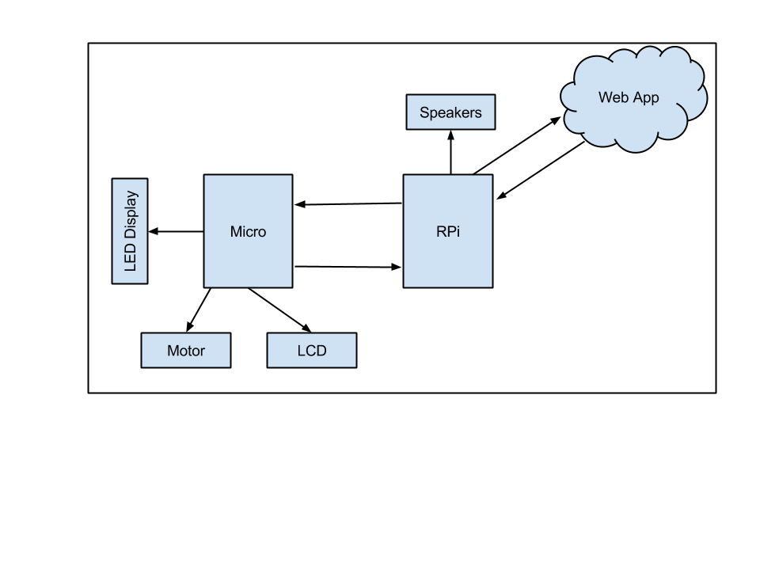
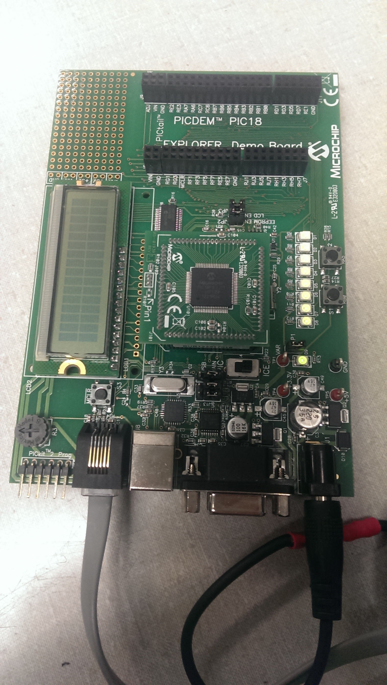

January 15, 2014 (2 hour):
Met as a team during lab to discuss preliminary project proposal.
January 15, 2014 (2.5 hours):
Met as a team to begin writing preliminary project proposal. I did a lot of research on existing patents and designs.
January 18, 2014 (3 hours):
Edited and completed layout for team website.
WEEK 01 SUMMARY
Accomplishments: Submitted preliminary project proposal and got website up and running.
Weekly Work Total: 8.5 hours
Project Work Total: 8.5 hours
January 25, 2014 (1 hour):
Finished cleaning up the final proposal and design schedule. All homeworks have been completed through a Google Doc form to ensure all revisions can be captured.
WEEK 02 SUMMARY
Accomplishments: Submitted final project proposal
Weekly Work Total: 1 hours
Project Work Total: 9.5 hours
January 28, 2014 (2 hours):
Completed Eagle tutorials and schematic design homework. This will be crucial to know and understand once the PCB board is being prototyped.
January 29, 2014 (2.5 hours):
Met as a team to begin prototying the Every1 DJ. Spent a few hours deciding what will be implemented and the main design aspects. It was decided that a Raspberry Pi will be used to interface with the web application.
February 1, 2014 (1 hour):
Updated Team 2 website with the PSSC's and links to the completed homeworks.
WEEK 03 SUMMARY
Accomplishments: Keeping website updated and finalizing project contraints so that parts can get ordered in a timely fashion
Weekly Work Total: 5.5 hours
Project Work Total: 15 hours
February 2, 2014 (1 hour):
Created the Google Doc for Homework 3. Did priliminary research for LED's, LCD's and microcontrollers.
February 4, 2014 (3 hours):
Finialized the design contraints for the microcontoller. Decided that around 100 I/O pins will be used for the LED's, and a shift register will not be needed to expand the I/O pins. SPI interfacing and ADC is also important to interface with the Raspberry Pi. The Every1 DJ will utilize a DSPIC33EP512MU814-I/PH-ND microntroller.
Realized that heat dissipation may become an issue if all components are housed within the same unit. The system may have to utilize a fan to keep all parts cool
Completed parts of Homework 3, including the introduction, some design contraints, interface requirements, packaging contraints, microcontroller selection and block diagram.
Below is the block diagram for our design:

February 5, 2014(1.5 hour):
Researched implementations of this design to see what has been used in the past. This includes packing selection, motor use, etc. The key is to determine how the disco ball and lights will be housed (i.e. a plexiglass sphere with LED's inside, a mirrored discoball with LED's on the outside, etc). Once this is finialized, parts can be ordered.
February 6, 2014(1.5 hour):
A final design was determined. LED's will be housed externally from the disco ball. This way there will be no worries of wires being tangeled. The mechanical design will mimic the design from this video: http://www.youtube.com/watch?v=Qnm_IXD6tNM .
Because the mechanical design changed, and only 4 LED's will be used, the microcontroller constraints changed a little. It was determined by the team that the microcontroller needed the following properties:
1. Two ADC's for audio sample
2. Around 20-40 I/O pins for LED's, LCD, push buttons
3. Serial peripheral interfacing to interface with the Raspberry Pi
From these specifications, and the availability of test boards in lab, it was detemined the the PIC18F87J11 would suit the projects needs the best. This device has 68 I/O pins which gives the team enough leeway incase design changes happen throughout the project. This microcontroller is also available for checkout in lab, which makes inital prototyping simpler.
WEEK 04 SUMMARY
Accomplishments: Most parts selected and a final design selected.
Weekly Work Total: 7 hours
Project Work Total: 22 hours
February 12, 2014 (1 hour):
Checked out the PIC microcontroller from Joe during mandatory lab session. Began downloading the software programs to begin programming the micro. Also, began looking into ordering parts for the design.
February 13, 2014 (1 hour):
Completed the commercial product packaging comparison for Homework 4. This was done by researching Walmart and Target for party lighting systems. Many of the commerical products out today have the same foundation as the Every1 DJ, but none utilize a web application for song voting.
WEEK 05 SUMMARY
Accomplishments:
Weekly Work Total: 2 hours
Project Work Total: 24 hours
February 16, 2014 (1 hour):
Began working on the pinout for the microcontroller. This has not proven very challenging yet because a lot of documentation is available for the PIC microcontroller. The difficulty is making sure all parts are connected correctly and all parts are accounted for.
February 19, 2014 (2.5 hours):
Began working the PIC18 J-Series development board. Got it connected to the PC, and loaded code onto the chip. Got the LED's to turn on and off!

February 21, 2014 (3 hours):
Completed homework 5. Now there is a basic concept of how information will travel through all different parts.
February 22, 2014 (3 hours):
Began working on SPI on the microcontroller. There are many examples online utilizing the LCD on the development board. These examples utilized the spi.h library but used different microcontrollers than the PIC18F87J11 that the Every1 DJ is using. Therefore, all the examples had to be re-written to utilize the correct port pins for the PIC18F87J11. About one hour was spent trying to get the premade code to work, but the LCD was displaying values that did not correspond to the written code. This may have been from previous designs loaded onto the board, and the newly written code was not being loaded correctly.
After this mishap, a new direction was sought. It was decided to try and get the SPI working by tying the two SPI ports together on the microcontroller. This meant having the output of SPI1 as an input to SPI2. The following port assignments were used:
RC3 (SCLK1) <--> RD6 (SCLK2)
RC4 (SPI_IN1) <--> (SPI_OUT2)
RC5 (SPI_OUT1) <--> (SPI_IN2)
The code to send data across these ports was written, again utilizing the spi.h library. While attempting to load the design onto the development board, there were a lot of issues with the driver and updates to the driver. Until the driver setup is fixed, the code cannot be loaded onto the board. This served as a stopping point for the day after much frustration with trying to get the driver software to operate correctly. More work will be done in the next few days to try and get the driver working correctly.
WEEK 06 SUMMARY
Accomplishments: Work on the development board has begun. Initial SPI interfacing was started on the micrcontroller and the Raspberry Pi. Although frustrating at times, this is a very necessary step to move forward in the project.
Weekly Work Total: 9.5
Project Work Total: 33.5
February 24, 2014 (2 hours):
More work was done to try and get SPI working on both the microcontroller and the Raspberry Pi. The driver issues were fixed by another team member before arrival. The first task was trying to get the microcontroller and the Raspberry Pi talking through SPI. An attempt was made to print out the values being sent to the Raspberry Pi, but it seemed that random variables were being read by the Raspberry Pi. This brought our focus onto SPI on the Raspberry Pi, which seemed to malfunctioning.
A new focus was brought on, and debugging of SPI on the Raspberry Pi was started. The SPI input, output and clock were all hooked up to the oscilloscope to verify that data was being sent correctly. While zooming in to each of the signals, it seemed that garbage values were being shown on the input and output lines. This lends to the fact that random variables were being read by the Raspberry Pi from earlier. Changes in the code utilizing the spi library were made but, it seemed that whatever code changes were made, the oscilloscope readings never changed.
Further work must be done to ensure SPI works on both the microcontroller and the Raspberry Pi. This is a rather frustrating step, but will prove invaluable once complete. All interfaces, except for one, utilizes SPI. Therefore, this is a top priority for all group members.
February 25, 2014 (3 hours):
Debugged the Raspberry Pi SPI from yesterday. Instead of using the python example online from yesterday, a new c example was found. This new code tied the SPI in to the SPI out on the Raspberry Pi. Sucessful completion of data transfer occured (picture).
After successful completion of SPI on the Raspberry Pi, debugging between the Raspberry Pi and the microcontroller was done. The Raspberry Pi has to be set as the master to the microcontroller, because this is the only setting that is allowed on the Raspberry Pi. A successful transfer of data from the Raspberry Pi to the microcontroller was done. (picture)
February 26, 2014 (6 hours):
Created parts on Eagle including, LED driver, PIC microcontroller, voltage regualtor and voltage converter. Made sure the lengths, widths and pad size/placements were correct by placing the physical parts on a printed version of our design. Had to adjust pad lengths by ~.2mm for most of the parts so that soldering will be easier in the future.
After all parts were created, grouping of all 'like' parts was done for the PCB layout. It is important to group 'like' parts together (ex: power, audio filtering, LED devices, etc.) so that routing is made easier.
Once the parts were grouped in the correct locations, ground fills and traces were made to connect all components.
February 27, 2014 (2 hours):
Completed part placements on the PCB in Eagle. This proved to be rather difficult to try and minimize wire crossings. Also made sure that all 'like' parts were placed together, including the power circuitry, audio circuitry, LED circuitry, etc.
February 28, 2014 (4 hours):
Continued to use traces to connect parts on the PCB. Made sure to use only 45 degree angles and not cross any wires. To avoid crossed wires, holes were used to trace on the bottom side of the PCB.
Used this time to also research a different approach to driving the LEDs. Instead of building a driving circuit, research into a LED driver chip was done. This would eliminate errors on the designing and selection of resistors and BJT's. The L293D Quadruple Half-H Driver was found linked on the LED page on SparkFun. This driver works for a bipolar stepper motor, and can regulate motor direction and speed.
WEEK 07 SUMMARY
Accomplishments: Final PCB layout was complete, and all parts were placed in designated areas on the board. This is a crucial aspect of the project and must be done correctly and checked over by the TA's many times before submitting for manufacturing.
Weekly Work Total: 17
Project Work Total: 50.5